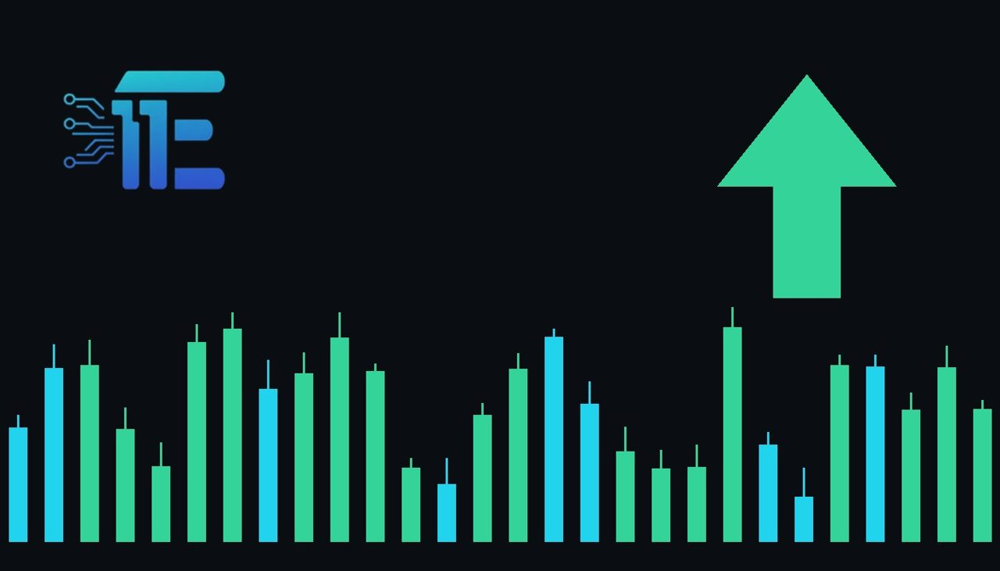

Oil Climbs on Reports of US-Israel Action Against Iranតម្លៃប្រេងឡើងថ្លៃ ក្រោយមានសេចក្តីរាយការណ៍អំពីសកម្មភាពយោធាដែលអាចកើតមានរវាងសហរដ្ឋអាមេរិក និងអ៊ីស្រាអែល ប្រឆាំងនឹងអ៊ីរ៉ង់
XAU/USD impact: ▲ Bullishផលប៉ះពាល់លើ XAU/USD: ▲ ឡើង

Crude oil prices advanced on Wednesday following reports regarding possible US and Israeli military operations against Iran. The geopolitical escalation and energy surge boost safe-haven demand and inflation hedge interest in gold.
តម្លៃប្រេងឆៅបានកើនឡើងនៅព្រឹកថ្ងៃពុធ បន្ទាប់ពីមានសេចក្តីរាយការណ៍អំពីប្រតិបត្តិការយោធាដែលអាចកើតមានរវាងសហរដ្ឋអាមេរិក និងអ៊ីស្រាអែល ប្រឆាំងនឹងអ៊ីរ៉ង់។ ភាពតានតឹងភូមិសាស្ត្រនយោបាយ និងការហក់ឡើងនៃថ្លៃថាមពលនេះ ជួយជំរុញតម្រូវការទិញមាសជាទ្រព្យសម្បត្តិសុវត្ថិភាព។
Crude oil prices advanced on Wednesday morning following emerging reports that the US and Israeli militaries may still be planning military action against Iran. The renewed prospect of conflict involving a major oil producer immediately triggered a bid across energy markets as participants factored in heightened geopolitical instability.
តម្លៃប្រេងឆៅបានហក់ឡើងនៅព្រឹកថ្ងៃពុធ បន្ទាប់ពីមានសេចក្តីរាយការណ៍ថ្មីៗដែលបង្ហាញថាកងទ័ពសហរដ្ឋអាមេរិក និងអ៊ីស្រាអែល អាចនឹងនៅតែគ្រោងធ្វើសកម្មភាពយោធាប្រឆាំងនឹងប្រទេសអ៊ីរ៉ង់។ ការរំពឹងទុកជាថ្មីអំពីជម្លោះដែលពាក់ព័ន្ធនឹងប្រទេសផលិតប្រេងដ៏សំខាន់មួយនេះ បានជំរុញឱ្យមានការទិញភ្លាមៗនៅលើទីផ្សារថាមពល ខណៈដែលអ្នកចូលរួមទីផ្សារគិតគូរអំពីអស្ថិរភាពភូមិសាស្ត្រនយោបាយដែលកើនឡើងខ្ពស់។
For gold (XAU/USD), geopolitical friction serves as a direct catalyst for safe-haven accumulation. During periods of heightened international hostility and potential military confrontation, institutional capital frequently flows toward physical bullion to protect against broader financial and economic shocks. Additionally, climbing energy prices amplify baseline inflation expectations, which traditionally encourages participation in gold as an inflation-hedging instrument.
សម្រាប់ទីផ្សារមាស (XAU/USD) ភាពតានតឹងភូមិសាស្ត្រនយោបាយដើរតួជាកាតាលីករផ្ទាល់ក្នុងការជំរុញតម្រូវការទិញទ្រព្យសម្បត្តិសុវត្ថិភាព។ ក្នុងអំឡុងពេលដែលជម្លោះអន្តរជាតិ និងការប្រឈមមុខដាក់គ្នាខាងយោធាកើនឡើង ដើមទុនជាច្រើនតែងតែហូរចូលទៅកាន់មាសដុំ ដើម្បីការពារហានិភ័យពីវិបត្តិហិរញ្ញវត្ថុ និងសេដ្ឋកិច្ច។ បន្ថែមពីនេះ ការកើនឡើងនៃថ្លៃថាមពលក៏បានបង្កើនការរំពឹងទុកលើអតិផរណា ដែលជាទូទៅជំរុញឱ្យមានការទិញមាសដើម្បីការពារហានិភ័យអតិផរណាផងដែរ។
However, the transmission channel also encompasses currency and debt markets. Sustained increases in energy costs can revive headline inflation risks, potentially influencing central bank policy outlooks. If higher oil prices encourage expectations of tighter monetary conditions, rising Treasury yields or a firmer US dollar could act as a counterweight, offsetting a portion of the safe-haven demand for non-yielding bullion.
ទោះជាយ៉ាងណាក៏ដោយ យន្តការជះឥទ្ធិពលនេះក៏គ្របដណ្តប់លើទីផ្សាររូបិយប័ណ្ណ និងប័ណ្ណបំណុលផងដែរ។ ការកើនឡើងជាបន្តបន្ទាប់នៃថ្លៃថាមពល អាចបង្កើនហានិភ័យអតិផរណាឡើងវិញ ដែលអាចជះឥទ្ធិពលដល់ទស្សនវិស័យគោលនយោបាយរបស់ធនាគារកណ្តាល។ ប្រសិនបើតម្លៃប្រេងឡើងខ្ពស់ជំរុញឱ្យទីផ្សាររំពឹងថានឹងមានអត្រាការប្រាក់ខ្ពស់យូរជាងមុន នោះការកើនឡើងនៃទិន្នផលប័ណ្ណបំណុល ឬការឡើងថ្លៃនៃដុល្លារអាមេរិក អាចក្លាយជាកម្លាំងទប់ទល់នឹងការកើនឡើងថ្លៃរបស់មាស ដែលជាទ្រព្យសម្បត្តិមិនផ្តល់ការប្រាក់។
Looking at the scenario balance, if military action materializes or regional conflict escalates significantly, persistent geopolitical risk and sustained energy disruptions would typically provide strong upward support for gold prices. On the other hand, if tensions subside or diplomatic resolutions prevent military operations, the geopolitical risk premium in commodities could unravel rapidly, exerting downward pressure on gold.
សម្លឹងមើលទៅលើសេណារីយ៉ូទៅមុខ ប្រសិនបើសកម្មភាពយោធាកើតឡើងពិតប្រាកដ ឬជម្លោះក្នុងតំបន់រីករាលដាលខ្លាំង ហានិភ័យភូមិសាស្ត្រនយោបាយ និងការរំខានដល់ការផ្គត់ផ្គង់ថាមពលយូរអង្វែង នឹងផ្តល់ការគាំទ្រយ៉ាងរឹងមាំដល់តម្លៃមាស។ ផ្ទុយទៅវិញ ប្រសិនបើភាពតានតឹងបានធូរស្រាល ឬកិច្ចចរចាការទូតអាចទប់ស្កាត់ប្រតិបត្តិការយោធាបានបុព្វលាភហានិភ័យនៅក្នុងទំនិញអាចនឹងថយចុះយ៉ាងឆាប់រហ័ស ដែលនឹងដាក់សម្ពាធធ្លាក់ចុះលើតម្លៃមាស។
Going forward, precious metal traders should closely monitor verified announcements regarding Middle Eastern geopolitical developments, ongoing oil price momentum, and shifts in US yields and the US dollar index to gauge whether gold can sustain its safe-haven support.
ជាបន្តបន្ទាប់ អ្នកជួញដូរលោហៈធាតុមានតម្លៃគួរតែតាមដានយ៉ាងដិតដល់នូវសេចក្តីថ្លែងការណ៍ផ្លូវការទាក់ទងនឹងការវិវត្តភូមិសាស្ត្រនយោបាយនៅមជ្ឈិមបូព៌ា ការប្រែប្រួលនៃតម្លៃប្រេង ព្រមទាំងការផ្លាស់ប្តូរនៃទិន្នផលប័ណ្ណបំណុលអាមេរិក និងសន្ទស្សន៍ដុល្លារអាមេរិក ដើម្បីវាយតម្លៃថាតើមាសអាចរក្សាកម្លាំងគាំទ្រពីតម្រូវការសុវត្ថិភាពបានឬយ៉ាងណា។
Key takeawaysចំណុចសំខាន់ៗ
- Crude oil gained following reports of potential US and Israeli military action against Iran.
- តម្លៃប្រេងឆៅបានកើនឡើង ក្រោយមានសេចក្តីរាយការណ៍អំពីសកម្មភាពយោធាដែលអាចកើតមានរវាងសហរដ្ឋអាមេរិក និងអ៊ីស្រាអែល ប្រឆាំងនឹងអ៊ីរ៉ង់។
- Geopolitical uncertainty and elevated energy prices typically bolster safe-haven and inflation demand for gold.
- ភាពមិនច្បាស់លាស់នៃភូមិសាស្ត្រនយោបាយ និងតម្លៃថាមពលដែលកើនឡើង ជាទូទៅជួយជំរុញតម្រូវការទិញមាសសម្រាប់សុវត្ថិភាព និងការពារហានិភ័យអតិផរណា។
- A stronger dollar or climbing bond yields driven by inflation concerns could constrain gold's upside potential.
- ការឡើងថ្លៃនៃដុល្លារអាមេរិក ឬការកើនឡើងទិន្នផលប័ណ្ណបំណុលដែលបណ្តាលមកពីការព្រួយបារម្ភលើអតិផរណា អាចដាក់កំហិតលើសន្ទុះឡើងថ្លៃរបស់មាស។
Original commentary by THE MARKET CODE, based on public reporting from Yahoo! Finance: GC=F News. Written with the help of AI. Educational only, not financial advice.
មតិវិភាគដើមដោយ THE MARKET CODE ផ្អែកលើការរាយការណ៍សាធារណៈពី Yahoo! Finance: GC=F News។ សរសេរដោយមានជំនួយពី AI។ មាតិកាអប់រំប៉ុណ្ណោះ មិនមែនជាដំបូន្មានហិរញ្ញវត្ថុទេ។